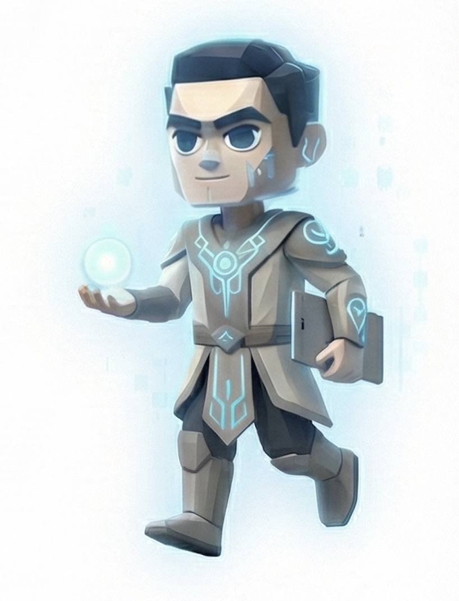

Campaign Manager
新手村的試煉
1 Year
- 產業知識的建立、輪班值班
- 加速工作流 (偷偷開發小工具)
Product Manager
初出新手村
1 Year
Sr. Product Manager
AI <> UI 的邂逅
6 Months
- 內部系統與核心 AI 模型的重整
- 連結技術邏輯與使用者介面
Associate Director
Zero to One (SaaS)
3 Years 6 Months
Director (Part I)
最大產品線負責人
1 Year
- 百人以上跨部門合作
- 多任務同步處理 (Multitasking)
Short Break
雙朝聖之路
2.5 Months
Sabbatical
Director (Part II)
內部核心系統負責人
1 Year 9 Months+
Current
- Agentic AI 開發、產品轉型
- 內部轉職培訓與團隊塑形
